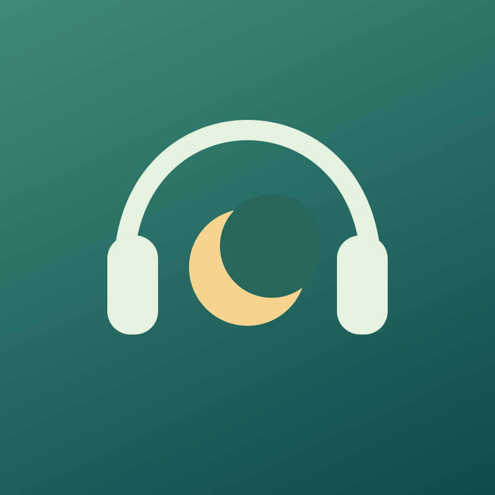

耳机里，轻轻唤醒
播放前核验输出设备。耳机断连立即停止，不用带声系统通知兜底。待机中的 AirPods 也可以手动刷新并选择输出。

耳憩 HUSHNESTA LITTLE REST. ALL YOURS.
午后的十五分钟，通勤里的小憩。
戴上耳机，让耳憩陪你缓缓放松，再轻轻醒来。
iPhone · iOS 17+ · 无广告 · 无订阅
TestFlight 外部体验需等待 Apple 审核及开放名额。
安心休息，慢慢来。
安静，有自己的节奏
播放前核验输出设备。耳机断连立即停止，不用带声系统通知兜底。待机中的 AirPods 也可以手动刷新并选择输出。
声音、主题和计时功能全部免费。可通过 Apple 一次性内购赞助开发，没有订阅或付费功能等级。
为片刻安静，选一种底色
八种原创合成音景，八种渐强旋律。离线播放，不需要麦克风或账号。无助眠音模式适合保持应用在前台的安静休息。
此网页不播放音频。声音可在 App 内连接耳机试听。
四种心情，一样自在
开始之前，安心了解
播放实际可听的助眠音时，应用支持后台音频，并允许与其他应用混音。但其他应用、来电、系统资源限制或强制关闭仍可能中断播放；中断后需手动恢复。请先在你的 iPhone 和耳机上用短计时验证。
请保持耳憩在前台。没有持续播放的音频时，iOS 可能挂起应用，无法保证后台仅耳机响铃。因此切后台会停止耳机预约，只保留可选的无声到点通知。通知也可能被专注模式隐藏。
蓝牙联机不一定意味着媒体输出已切到耳机。点首页耳机卡片无声刷新，或打开系统输出选择器选中 AirPods。降噪模式不改变媒体路由；实际音量由系统和 App 共同决定。
配置与最近最多 365 条记录保存在本机，无分析或广告 SDK。自愿赞助由 Apple StoreKit 处理。官网由 GitHub Pages 托管，其访问日志适用 GitHub 隐私政策。
MIT 开源，让每一份安静都触手可及。